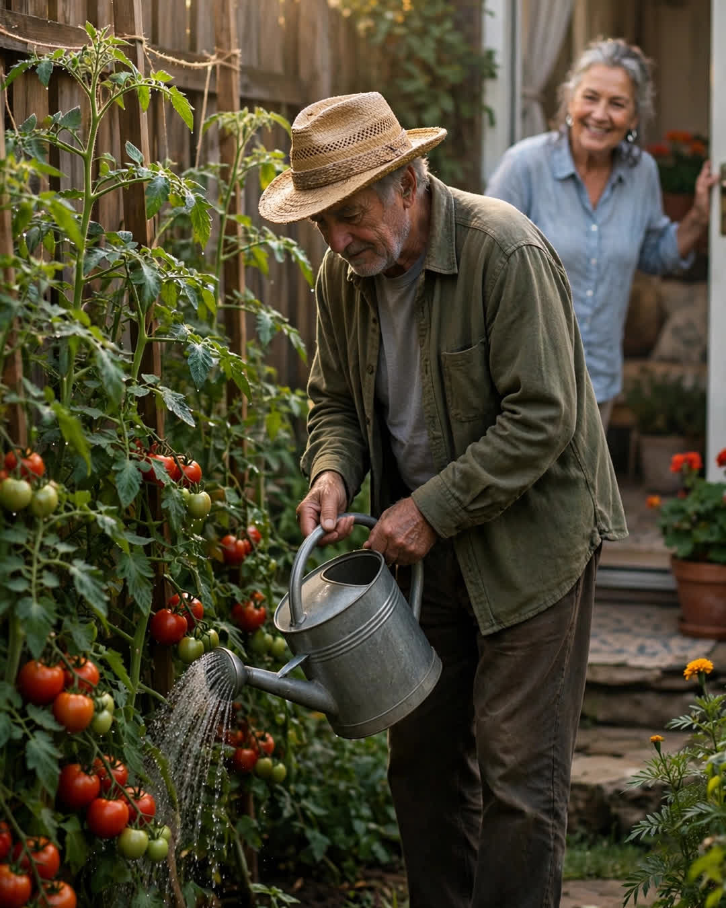

The Tomato Fence
A Clipp Kaili original story

The fight over the tomato fence lasted two summers, produced one lawyer's letter, and ended with the best harvest our street had ever seen.
Rosa Delgado planted tomatoes the way her mother had in New Mexico — big heirloom rows, staked high, taking sun from morning to evening along the fence line she shared with Henry Park. Henry, a retired engineer, measured things. He measured the fence. He measured the shade Rosa's vines threw across his peppers by August. He measured, finally, his patience, and found it four inches short — the exact width, he claimed, that her garden bed crossed onto his side.
Rosa said a tomato does not read a survey.
Henry said a property line is a property line.
Both of them were right, which is the worst kind of fight to settle. Notes were left in mailboxes. A lawyer's letter arrived and was read aloud, with feeling, over the fence. By the second summer, the street had divided into camps: Team Tomato and Team Line, and Sunday dinners had a topic that never ran dry.
Then, in early July, Rosa fell in her kitchen and broke her hip.
She was in the hospital for nine days. Her son lived three states away. The garden — thirty tomato plants heavy with green fruit, peppers, squash, the herbs her late husband used to call "the pharmacy" — sat in the July heat with nobody to water it, days from being lost entirely.
On the third morning, Rosa's neighbor on the other side called her hospital room with news she delivered carefully: "Rosa. Do not get upset. But Henry Park is in your garden."
He was there at six every morning after that. And again at seven every night. Nobody asked him. He brought his own hose because, he said, hers kinked — an engineer's complaint to the very end. He weeded. He tied up vines that the wind had thrown down. He picked exactly when picking was needed and left baskets of ripe tomatoes on the porches of half the street with a note, in block capitals, that fooled nobody:
"FROM ROSA'S GARDEN. SHE WOULD WANT YOU TO HAVE THE GOOD ONES."
When Rosa came home with a walker and a list of things she was forbidden to do, Henry was in the back row staking a vine that had outgrown its support. She watched him from her patio door for a full minute before he noticed her.
"Your tomatoes crossed the line again," he said, without looking up. "Four inches into my peppers. Ruining everything."
"I will have them arrested," Rosa said.
"See that you do." He drove the stake in straight and true. "Next year we move your bed six inches your way. I have already measured. And we put the tall ones on the north end, so the shade argument is finished before it starts."
Next year. He said it like a man signing a treaty.
They canned sauce together that October, forty-one jars, in Rosa's kitchen, arguing the entire time about salt. Henry still complains about the fence at cookouts. Rosa still tells him a tomato does not read a survey. But the garden now runs straight across both yards — one garden, two owners, and a gate cut into the fence exactly where the fight used to be.
Some fences keep people out. The best ones just needed a gate — and one person willing to water what was not his, until it was.
This story is a work of fiction, written to touch hearts and bring families closer.
← Back to all stories